Advanced MVC Patterns
Downloads
I originally wrote this article for IBM's VisualAge Developer Domain, but support for VisualAge has been stopped and IBM has removed the article.
In the first article in this series Applying the Model/View/Controller Design Paradigm in VisualAge for Java, I introduced the Model-View-Controller paradigm and walked through an example implementation.This article covers advanced techniques and strategies for applying the Model/View/Controller paradigm. Much of this article is conceptual, with examples given in VisualAge for Java so you can see how to implement the strategies. Keep in mind that the key to MVC is abstraction and separation of classes. The techniques described in this article add more power and flexibility to your use of MVC to achieve these goals
Note: The first article has undergone heavy revision. Over the past several months I have come up with some better (and simpler) ways to use MVC in VisualAge, and the first article now reflects these techniques. I stongly recommend that you read the first article, even if you have read it before, as the techniques are now much better than they were previously. Note that much of this article builds on the knowledge in that article.
Advanced MVC Strategies
The previous article presents the basic concepts of the Model-View-Controller paradigm. In that article we applied the MVC paradigm by creating a simple phone book application. Our final phone application contained a model that tracked address entries in a Hashtable, and two delegates. One delegate displayed a single address entry, allowing the user to add and find entries. The other delegate presented a list of all named registered in the address book.
However, our implementation of the phone application was incomplete:
- The data in the list was unsorted.
- There was no way to associate the "selected data" in two different delegates. If a user saw a list of names in a phonebook application, they would assume that selecting a name would display its details in the entry form. In this article, we will describe how to associate the notion of "selection" with multiple delegates.
In this article we will address these issues as well as several others that can help improve any Model-View-Controller design. Well start with some concepts, then come back to the phone application as well as some other example applications.
Reviewing Some Terms
Before we start, let's review some of the terms we encountered in the last article.
Model. This represents the part of the application that stores our data and provides methods to act on that data.
View. This is the part of the application that presents the data to the user.
Controller. This is the part of the application that accepts user input and requests modifications to the model.
Delegate. A view/controller combination, often referred to as the User Interface (UI). This simplifies the MVC paradigm into a Model-Delegate paradigm. The business logic and user interface are still separate.
Leveraging Swing
Sun's Java Foundation Classes (JFC) provide an extremely useful tool kit called Swing. The Sun developers based Swing firmly on the Model-View-Controller paradigm, which makes it a very effective tool set for developing a delegate.
For some examples in this article, we will use Swing as the basis for new models and delegates. We will use Swing's TableModel, showing ways to enhance its behavior and use it in VisualAge for Java. TableModel is an interface that defines the following methods.
public interface TableModel {
public int getRowCount();
public int getColumnCount();
public String getColumnName(int columnIndex);
public Class getColumnClass(int columnIndex);
public boolean isCellEditable(int rowIndex,
int columnIndex);
public Object getValueAt(int rowIndex,
int columnIndex);
public void setValueAt(Object aValue,
int rowIndex,
int columnIndex);
public void addTableModelListener(
TableModelListener l);
public void removeTableModelListener(
TableModelListener l);
}
Advanced Models and Delegate
Models and delegates do not actually need to store their data. They can provide means to interpret existing data, even if that data is stored on another machine, or if they want to change the appearance of the data. In this section, we examine models used as proxies for other data, delegates that proxy the view to another machine, and helper models that assist MVC development and usability.
Models as Proxies
One of the biggest mistakes that people make when designing and using models is copying data. When they adapt existing data structures into new models, they copy data to the new model. When they want to reinterpret the data, for example, sorting it, they copy the data. When they want to join two separate sources of data, they copy the data.
This copying is often unnecessary and extremely expensive. This is one of the key reasons why many Swing applications display poor performance. What most programmers do not think about is that models are merely interfaces; they do not need to actually store any data!
A proxy is something that acts on behalf of another object. Whether that object exists on the current machine or across a network, the idea is that any other object can interact with the proxy in the same manner as it would interact with the real object. The proxy implements the same interface as the real object, obtains data from the real object, and possibly translates that data.
This is the key to developing effective models. If you already have data in an existing data structure or database, you can write a proxy to adapt communication with that data to fit a model.
Models as Simple Filters
Filters are simply proxies. A filter obtains data from some source (possibly another model that implements the same interface) and translates or hides some of that data. As a simple example, we look at Swing's JTable, and define a model that can limit the displayed columns.
Suppose we have a TableModel that contains 20 rows of data in six columns. An example of such a model follows. Note that this TableModel hard codes its data, but it could easily have obtained the data from a database. The data in this model helps to demonstrate the effect of applied filters.
package com.javadude.articles.vaddmvc2;
import com.sun.java.swing.*;
import com.sun.java.swing.event.*;
import com.sun.java.swing.table.*;
/**
* A simple table model with hardcoded data
* Each cell displays (r,c) where r and c
* are integer row and column numbers
* This model helps to show the effect of
* an applied filter model
*/
public class FixedTableModel extends AbstractTableModel {
/**
* Return the number of columns
* in the model -- we explicitly use 6
*/
public int getColumnCount() {
return 6;
}
/**
* Return the number of rows
* in the model -- we explicitly use 20
*/
public int getRowCount() {
return 20;
}
/**
* Return a string that describes the
* location in the data
*/
public Object getValueAt(int rowIndex,
int columnIndex) {
return columnIndex + "," + rowIndex;
}
}
To simplify this and other examples, we create an abstract class named FilteredTableModel. FilteredTableModel keeps track of another TableModel This FilteredTableModel delegates all of its methods to the real TableModel. Each of the delegations alter the requested row and column using the mapRow() and mapColumn() method. This allows subclasses to create simple filters just by changing the mappings.
package com.javadude.articles.vaddmvc2;
import com.sun.java.swing.*;
import com.sun.java.swing.event.*;
import com.sun.java.swing.table.*;
/**
* A sample abstract filtering model
* This model delegates nearly all its
* methods to another TableModel, but
* subclasses can change the way columns
* are mapped
* Note that we have omitted error checking
* such as "is the real model null" for
* brevity/clarity in this example
*/
public abstract class FilteredTableModel
implements TableModel {
// The realTableModel property. This property
// tracks the real model we use
private TableModel fieldRealTableModel;
/**
* Gets the realTableModel property (TableModel) value.
* @return The realTableModel property value.
* @see #setRealTableModel
*/
public TableModel getRealTableModel() {
return fieldRealTableModel;
}
/**
* Sets the realTableModel property (TableModel) value.
* @param realTableModel The new value for the property.
* @see #getRealTableModel
*/
public void setRealTableModel(TableModel realTableModel) {
fieldRealTableModel = realTableModel;
}
/** Provides a mapping from a requested
* column to the column in the real model
* Subclasses can override this to
* define special mappings
*/
protected int mapColumn(int columnIndex) {
return columnIndex;
}
/** Provides a mapping from a requested
* row to the row in the real model
* Subclasses can override this to
* define special mappings
*/
protected int mapRow(int rowIndex) {
return rowIndex;
}
public void addTableModelListener(TableModelListener l) {
getRealTableModel().addTableModelListener(l);
}
public Class getColumnClass(int columnIndex) {
return getRealTableModel().
getColumnClass(mapColumn(columnIndex));
}
public int getColumnCount() {
return getRealTableModel().getColumnCount();
}
public String getColumnName(int columnIndex) {
return getRealTableModel().
getColumnName(mapColumn(columnIndex));
}
public int getRowCount() {
return getRealTableModel().getRowCount();
}
public Object getValueAt(int rowIndex,
int columnIndex) {
return getRealTableModel().
getValueAt(mapRow(rowIndex),
mapColumn(columnIndex));
}
public boolean isCellEditable(int rowIndex, int columnIndex) {
return getRealTableModel().
isCellEditable(mapRow(rowIndex),
mapColumn(columnIndex));
}
public void removeTableModelListener(TableModelListener l) {
getRealTableModel().removeTableModelListener(l);
}
public void setValueAt(Object aValue, int rowIndex,
int columnIndex) {
getRealTableModel().
setValueAt(aValue, mapRow(rowIndex),
mapColumn(columnIndex));
}
}
We define two subclasses that provide interesting filtering. First, OmitColumnTableModel hides a single column. It extends FilteredTableModel and changes the column mapping to omit a column, and reduces the column number report.
package com.javadude.articles.vaddmvc2;
import com.sun.java.swing.*;
import com.sun.java.swing.event.*;
import com.sun.java.swing.table.*;
/**
* A sample filtering model that omits
* a single column in a table
*/
public class OmitColumnTableModel extends FilteredTableModel {
// The hiddenColumn property tells us which column to omit
private int fieldHiddenColumn = 0;
/**
* Gets the hiddenColumn property (int) value.
* @return The hiddenColumn property value.
* @see #setHiddenColumn
*/
public int getHiddenColumn() {
return fieldHiddenColumn;
}
/**
* Sets the hiddenColumn property (int) value.
* @param hiddenColumn The new value for the property.
* @see #getHiddenColumn
*/
public void setHiddenColumn(int hiddenColumn) {
fieldHiddenColumn = hiddenColumn;
}
// Change the column mapping to skip the hidden column
/** Returns a fewer columns than the real
* TableModel actually has, as we hide one
*/
public int getColumnCount() {
return getRealTableModel().getColumnCount() - 1;
}
/** Provides a mapping from a requested
* column to the column in the real model
*/
protected int mapColumn(int col) {
if (col >= getHiddenColumn())
col++;
return col;
}
}
This simple extension effectively hides a column in the model. We define another filter that reverses the order of the columns. This is even simpler than the column-omitting filter.
package com.javadude.articles.vaddmvc2;
/**
* This TableModel reverses the column display
*/
public class ReverseColumnTableModel
extends FilteredTableModel {
/** Change the column mapping
* to return the columns in
* reverse order
*/
protected int mapColumn(int col) {
return getColumnCount() - col - 1;
}
}
We apply these filters when assembling our application. The JTable acts as our delegate, while the above two filters act as the models. We will assemble a simple GUI containing two JTables, each using one of the above models, and attaching a single FixedTableModel as the realTableModel for the filters.
To create this test application, perform the following steps:
- Create a new class that extends JFrame.
- Set its contentsPane's layout property to GridLayout
- Add two JTables to the contentsPane.
- Drop instances of FixedTableModel, ReverseColumnTableModel, and OmitColumnTableModel in an empty spot in the design area..
- We connect the FixedTableModel's this property to the realTableModel property of ReverseColumnTableModel and OmitColumnTableModel, so they can filter its data.
- Connect the this properties of the filters to the model properties of the two JTables.
The resulting test application appears in Figure 1.
Figure 1: A Filtering Model Sample
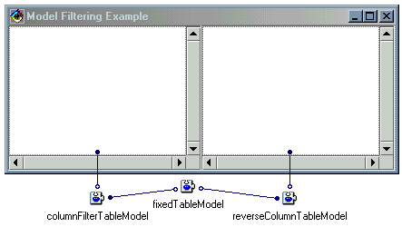
When we run this example, both tables share the same actual model data from the FixedTableModel. However, their actual models filter that data to present an altered view of it. Figure 2 shows the executing application. The left table displays all columns except the fourth column (numbered column three). The right table displays all data, reversing the column numbers.
Figure 2: Filtering in Action
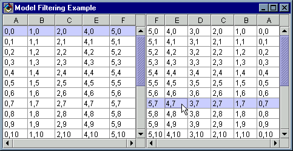
Filtering Existing Data
Filters provide some of the real power of a Model-View-Controller application. One of the most common mistakes that people make when using Swing components is to copy the data into the default Swing models. The proper way to use existing data is to adapt it via a filter.
For example, suppose you had an existing array of Person objects. The Person bean provides String properties name, address, and phone. A nave TableModel implementation might copy the properties from each Person into a two-dimensional array, and use that array in Swing's default TableModel support as follows.
// define the target data for the table
String[][] data = new String[10][3];
// copy the property values to the array
for(int i = 0; i < people.length; i++) {
data[i][0] = people[i].getName();
data[i][1] = people[i].getAddress();
data[i][2] = people[i].getPhone();
}
// define the names of the columns
String[] columnNames =
{"Name","Address","Phone"};
// create a default table model with the data
DefaultTableModel tableModel =
new DefaultTableModel(data, columnNames);
// use the default model with a table
table.setModel(tableModel);
This is a horribly slow implementation. Data copying must be avoided whenever possible.
Note: There are times when copying data to a cache can help performance. For example, suppose your model retrieves some data from a database, and the user will repeatedly use that same data. Copying the data into another data structure can improve performance under these circumstances. However, if you already have your data directly accessible in a data structure, do not copy it to another data structure. In a case like this, create a new filtering model that re-interprets the existing data.
For this example, a better approach would be to define a TableModel that simply interprets the existing data and returns it. For example, the getValueAt() method of such a TableModel might look as follows.public Object getValueAt(int row, int col) {
switch(col) {
case 0: return people[row].getName();
case 1: return people[row].getAddress();
case 2: return people[row].getPhone();
default: throw IllegalArgumentException("Bad Column");
}
}
Using a filter model such as this provides access to the existing data in its existing format. We simply interpret the existing data, adapting it to the model's interface. Remember: never copy data that you can simply interpret!
Narrowing our Phone List
As another example of filtering, we write an address book model that limits the list of displayed names based on a simple pattern. This filter wraps around any existing AddressBookModel (defined in the previous article). To provide the pattern, we need an extra property named pattern.
Note: To provide this extra property, we define another interface called Patterned with a getPattern() and setPattern() method. This allows us to use any model that implements both AddressBookModel and Patterned in our application. We do not want to simply add the pattern property to the AddressBookModel, as we do not want to require that all address books support the pattern filtering. Nor should we allow the delegate to assume which class it uses; always abstract the communication via an interface!
We start by defining our Patterned interface. This interface defines the required methods to support a bound read/write String property named pattern. This interface looks as follows.
package com.javadude.articles.vaddmvc2;
import java.beans.*;
/**
* An interface that describes and object
* that keeps track of a pattern
*/
public interface Patterned {
// the pattern property
public String getPattern();
public void setPattern(String pattern);
// Bound property support
public void addPropertyChangeListener(
PropertyChangeListener listener);
public void removePropertyChangeListener(
PropertyChangeListener listener);
}
Our strategy for the pattern filter must ensure that:
- We track an address book model that really contains the data. Note that this real model can be any model that implements the AddressBookModel interface introduced in the previous article.
- We modify the addresses property of that real model to limit the returned results to those that match the pattern. For this example, we only provide support for a prefix pattern; that is, we only check to see if the pattern matches the beginning of a name.
- We properly deal with PropertyChangeEvents. This can be tricky. There are
two main concerns here:
- When a delegate receives a propertyChange notification, the source must be the model passed to it. This will be the filter, not the real model.
- The delegate can receive notification for bound properties in both the real model and the filter model. However, it thinks all events were properties of the filter.
- When the pattern changes, we must make the addresses property appear to change as well.
The PropertyChangeEvent issue can be somewhat complex. The solution we present in the code below has the filter listen for property changes in the real model, then fire duplicate property change events itself. This ensures that all events appear to originate from the filter, rather than some coming from the real model and others from the filter.
The code for the filter follows. Note that this filter is slightly complex, and represents some of the issues you need to consider when writing a filter. At first, it may seem that a filter is simply a set of delegated methods with a few small changes. However, you need to carefully consider event handling, especially bound properties and ensuring that the event source is correct. The VCE's generated code depends upon a proper event source specification in order to perform connection processing.
package com.javadude.articles.vaddmvc2;
import com.javadude.articles.vaddmvc1.AddressBookModel;
import com.javadude.articles.vaddmvc1.AddressDataModel;
import java.beans.*;
/**
* An AddressBookModel filter.
* This filter allows specification of a pattern that
* restricts which address are returned by the addresses
* indexed property
*/
public class PatternedAddressBook
implements AddressBookModel, Patterned {
private AddressBookModel fieldRealAddressBook;
protected transient PropertyChangeSupport propertyChange;
private String fieldPattern;
// pcl is a holder for the PropertyChangeListener that
// we add to the real model. We need to hold a reference
// to it in case we change the real model later
private PropertyChangeListener pcl;
// Define addresses property to filter based on the
// pattern property
public AddressDataModel[] getAddresses() {
AddressDataModel[] data = getRealAddressBook().getAddresses();
String pattern = getPattern();
// if no pattern or it's empty, return data
if (pattern == null || pattern.equals(""))
return data;
// find out how many match the pattern
int count = 0;
for (int i = 0; i < data.length; i++)
if (data[i].getName().startsWith(getPattern()))
count++;
// if pattern matches all, return all
if (count == data.length)
return data;
// Otherwise Make the new data array
// Unfortunately, there is no other way to
// do this for an indexed property other
// than copy the String refs to a new
// array
AddressDataModel[] patterned = new AddressDataModel[count];
for (int i = 0, j = 0; i < data.length; i++)
if (data[i].getName().startsWith(getPattern()))
patterned[j++] = data[i];
return patterned;
}
public AddressDataModel getAddresses(int index) {
return getAddresses()[index];
}
// the pattern string property
public String getPattern() {
return fieldPattern;
}
public void setPattern(String pattern) {
String oldValue = fieldPattern;
fieldPattern = pattern;
firePropertyChange("pattern", oldValue, pattern);
firePropertyChange("addresses", null, getAddresses());
}
// the realAddressBook property, tracking the real model
// that we filter
public AddressBookModel getRealAddressBook() {
return fieldRealAddressBook;
}
public void setRealAddressBook(AddressBookModel realAddressBook) {
AddressBookModel oldValue = fieldRealAddressBook;
// if we used to have a value, remove the
// old property change listener
if (oldValue != null)
oldValue.removePropertyChangeListener(pcl);
// set the property value
fieldRealAddressBook = realAddressBook;
// set up listener to delegate events
if (pcl == null)
pcl = new PropertyChangeListener() {
public void propertyChange(PropertyChangeEvent e) {
firePropertyChange(e.getPropertyName(),
e.getOldValue(),
e.getNewValue());
}
};
realAddressBook.addPropertyChangeListener(pcl);
// report that the property has changed
firePropertyChange("realAddressBook", oldValue,
realAddressBook);
}
// Simply delegate the add & find methods
public void add(AddressDataModel data) {
getRealAddressBook().add(data);
}
public AddressDataModel find(String name) {
return getRealAddressBook().find(name);
}
// support methods for the bound properties
public void addPropertyChangeListener(
PropertyChangeListener listener) {
getPropertyChange().addPropertyChangeListener(listener);
}
public void removePropertyChangeListener(
PropertyChangeListener listener) {
getPropertyChange().removePropertyChangeListener(listener);
}
public void firePropertyChange(String propertyName,
Object oldValue,
Object newValue) {
getPropertyChange().firePropertyChange(propertyName,
oldValue,
newValue);
}
protected PropertyChangeSupport getPropertyChange() {
if (propertyChange == null) {
propertyChange = new PropertyChangeSupport(this);
};
return propertyChange;
}
}
Once we define the model, we need to use it in a delegate. We create a new delegate that wraps the previous AddressBookListUI, adding a pattern. We can only use this new delegate when a Patterned object is present. The delegate appears in Figure 3. Note that there are two variables for delegate model communication. First, we provide an AddressBookModel variable that the old AddressBookListUI (the top part of the delegate) sets as its model. Second, we provide a Patterned variable that connects to the pattern text field. We use a TextField for entry and connect it with the pattern property of the patterned variable. (When doing this, we need to modify the property-to-property connection to specify textValueChanged as the target event.) Note that this delegate makes no assumption about a relationship between the AddressBookModel and the Patterned object. In this example, we will use the same object for both. However, we could pass in two separate objects that implement these interfaces and communicate in another manner.
Figure 3: The AddressBookPatternListUI
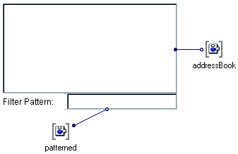
As we have done for all other delegate model variables, we promote the this property of the variables so we can set the variables outside the delegates. We can now add this delegate to another application.
We assemble our new application into a Frame, containing our new AddressBookPatternListUI and the old AddressBookUI. We drop instances of the PatternedAddressBook and HashAddressBook in an empty spot of the design area. The PatternedAddressBook is the AddressBookModel model for both delegates and the Patterned object for the AddressBookPatternListUI. We use the HashAddressBook as the real model for the PatternedAddressBook. This design appears in figure 4. The rest of the design is the same as in the previous article (use an instance of SimpleAddressData as the addressDataModel of the AddressBookUI, and an instance of SimpleAddressDataFactory as the addressDataFactory for HashAddressBook).
Figure 4: Designing the Pattern Filter Test
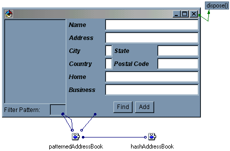
A sample execution appears in Figures 5 and 6. In figure 5, all names in the list appear. Figure 6 shows the same list after typing letter "S" in the filter field. Note that we do not change the real model; we simply provide a filter that restricts which data we see in it.
Figure 5: Without a Pattern
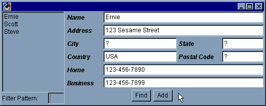
Figure 6: With a Pattern
Filtering is Only the Beginning
The above examples demonstrate some simple filters and some of the techniques involved in their creation. You can apply similar filtering to sort the names in the list. Note that we do not want to change the real data order with a sort, only the order in which the data appears. The following code provides a sort for the displayed names. The entire model is similar to the PatternedAddressBook above, without the pattern property.
public AddressDataModel[] getAddresses() {
AddressDataModel[] data = getRealAddressBook().getAddresses();
AddressDataModel[] sorted = new AddressDataModel[data.length];
System.arraycopy(data, 0, sorted, 0, data.length);
// do a simple inefficient bubble sort
for (int i = 0; i < sorted.length - 1; i++)
for (int j = i + 1; j < sorted.length; j++)
if (sorted[i].getName().compareTo(sorted[j].getName()) > 0) {
AddressDataModel temp = sorted[i];
sorted[i] = sorted[j];
sorted[j] = temp;
}
return sorted;
}
We apply this filter around the pattern filter, so that we only sort the reduced data. A sample application design appears in Figure 7. For this example, we have the unfortunate necessity to actually create extra arrays to represent the reduced and filtered data. For other cases, such as a Swing JTable, a sorting model can simply track a mapping of rows and modify the requested row number, similar to the column mapping we used to omit and reverse the table columns.
Figure 7: A Sorted List Application
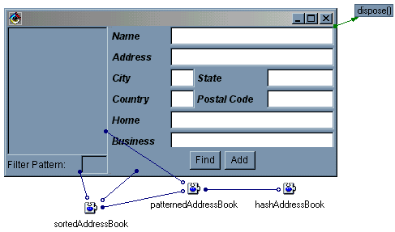
Note that this example shows how useful the separate Patterned interface has become. In this example, the list delegate uses the sorting model as its model, but it uses the pattern model to set the filter pattern. The separation of the two interfaces allows us this flexibility. Otherwise, we would have needed to provide the pattern in the sorting model.
Models as Joins
Sometimes the data you need is not available in a single location. Suppose, for example, that our address data resides in two different models (but both models still implement the same model interface). Some of the data might be in your personal address book, while other data might be in your work address book.
Filter models can have more than one source of their real data. A filter could combine data from two or more real models. A join filter allows a delegate to display data from multiple sources as though there were a single source. As an example, we will use Swing's TableModel as a joined model.
package com.javadude.articles.vaddmvc2;
import com.sun.java.swing.*;
import com.sun.java.swing.event.*;
import com.sun.java.swing.table.*;
import java.beans.*;
/**
* A Join Model, combining the columns in two models
*/
public class TwoTableJoinTableModel
extends AbstractTableModel
implements TableModelListener {
protected transient PropertyChangeSupport propertyChange;
private TableModel fieldModel1 = null;
private TableModel fieldModel2 = null;
/** Return the type of the column, mapping the column into
* the appropriate table
*/
public Class getColumnClass(int columnIndex) {
int col1Count = getModel1().getColumnCount();
if (columnIndex < col1Count)
return getModel1().getColumnClass(columnIndex);
else
return getModel2().getColumnClass(columnIndex - col1Count);
}
/** Return the number of columns, which is the sum of the
* the number of columns in each joined table
*/
public int getColumnCount() {
return getModel1().getColumnCount() +
getModel2().getColumnCount();
}
/** Return the name of the column, mapping the column into
* the appropriate table
*/
public String getColumnName(int columnIndex) {
int col1Count = getModel1().getColumnCount();
if (columnIndex < col1Count)
return getModel1().getColumnName(columnIndex);
else
return getModel2().getColumnName(columnIndex - col1Count);
}
/** return the number of rows in this table -- we'll use
* the maximum number of rows in either joined table
*/
public int getRowCount() {
return Math.max(getModel1().getRowCount(),
getModel2().getRowCount());
}
/** get the row/column value, mapping it to the appropriate
* real table position. If an empty position is requested,
* we return null
*/
public Object getValueAt(int rowIndex, int columnIndex) {
int col1Count = getModel1().getColumnCount();
if (columnIndex < col1Count) {
if (rowIndex < getModel1().getRowCount())
return getModel1().getValueAt(rowIndex, columnIndex);
}
else
if (rowIndex < getModel2().getRowCount())
return getModel2().getValueAt(rowIndex,
columnIndex - col1Count);
return null;
}
/** set the row/column value, mapping it to the appropriate
* real table position. If an empty position is requested,
* we return null
*/
public void setValueAt(Object aValue, int rowIndex,
int columnIndex) {
int col1Count = getModel1().getColumnCount();
if (columnIndex < col1Count)
getModel1().setValueAt(aValue, rowIndex, columnIndex);
else
getModel2().setValueAt(aValue, rowIndex,
columnIndex - col1Count);
}
/** delegate the check to see if a cell is editable to the
* appropriate real model
*/
public boolean isCellEditable(int rowIndex, int columnIndex) {
int col1Count = getModel1().getColumnCount();
if (columnIndex < col1Count) {
if (rowIndex < getModel1().getRowCount())
return getModel1().isCellEditable(rowIndex, columnIndex);
}
else
if (rowIndex < getModel2().getRowCount())
return getModel2().isCellEditable(rowIndex,
columnIndex-col1Count);
return false;
}
// properties to track the two real models
public TableModel getModel1() {
return fieldModel1;
}
public TableModel getModel2() {
return fieldModel2;
}
// The set methods need to add us as a listener
// so that we can forward the events to _our_ listeners
public void setModel1(TableModel model1) {
if (fieldModel1 != null)
fieldModel1.removeTableModelListener(this);
TableModel oldValue = fieldModel1;
fieldModel1 = model1;
fieldModel1.addTableModelListener(this);
firePropertyChange("model1", oldValue, model1);
}
public void setModel2(TableModel model2) {
if (fieldModel1 != null)
fieldModel1.removeTableModelListener(this);
TableModel oldValue = fieldModel2;
fieldModel2 = model2;
fieldModel1.addTableModelListener(this);
firePropertyChange("model2", oldValue, model2);
}
/** Catch the table model events of the real
* models and refire it to _our_ listeners
*/
public void tableChanged(TableModelEvent e) {
fireTableChanged(new TableModelEvent(this,
e.getFirstRow(),
e.getLastRow(),
e.getColumn(),
e.getType()));
}
// standard bound property support
public synchronized void addPropertyChangeListener(
PropertyChangeListener listener) {
getPropertyChange().addPropertyChangeListener(listener);
}
public void firePropertyChange(String propertyName,
Object oldValue,
Object newValue) {
getPropertyChange().firePropertyChange(propertyName,
oldValue, newValue);
}
public synchronized void removePropertyChangeListener(
PropertyChangeListener listener) {
getPropertyChange().removePropertyChangeListener(listener);
}
protected PropertyChangeSupport getPropertyChange() {
if (propertyChange == null) {
propertyChange = new java.beans.PropertyChangeSupport(this);
};
return propertyChange;
}
}
To use this new model, we simply need to connect two real models to a join model, then, connect the join model to one or more delegates. An example of this appears in Figure 8.
Figure 8: A Join Model
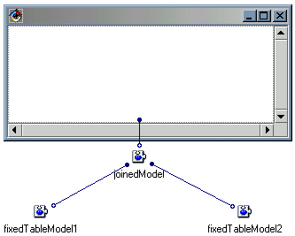
Figure 9 shows the results of running the above application.
Figure 9: Running the Join Model Application
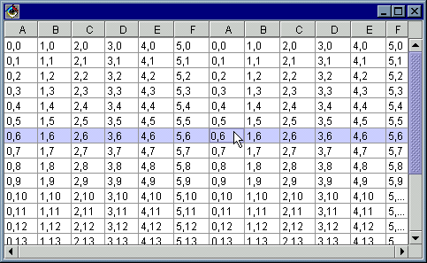
Note that the join model only communicates with its real models via the model interface. This means that we could plug in any other model into that interface. For example, we could use our ReverseTableColumnModel from earlier in this article to change the behavior of one of the real models before joining them, as shown in Figure 10. You can see the difference this makes in Figure 11. (Note: Be careful with connection order make sure the connections fire from the bottom up. The lowest level models should send their values to the filters before the filters send their values to the delegate. Use the Reorder Connections From command from the popup menu for each model object to see which connections are fired first.)
Figure 10: Filters are Models Too!
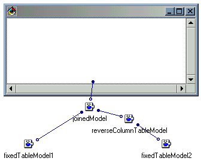
Figure 11: A Different Outcome
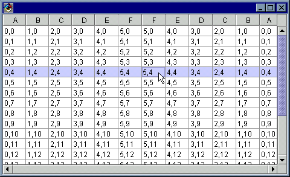
Keep in mind that filters are models too! Because of this, you can nest filters as deeply as you would like, with very little overhead (unless they perform a very complex filtering operation).
Thinking About More Proxies
The idea of using models as proxies is incredibly powerful. Not only can we filter local data, but we could also use proxy models to access data in a database or across a network. This behavior is similar to the filters we have presented so far, but rather than use a realModel property, you can obtain the actual data using JDBC calls, Java Remote Method Invocation (RMI), or through your own custom network protocol.
Proxy models extend your reach and allow you to use existing data, wherever that data may be. Remember that models simply provide interpretation of your data so a delegate can obtain that data.
Selection Models
So far, our phone application contains a list of names and an entry/display area for a specific record. The next logical step is to allow the user to select a name from the list delegate and have it displayed in the other delegate. Where do we store the current selection?
A common reaction is to put the selection information into the model. Because both delegates share the same model, they can access the same selection status. When one changes the selection, the other can see it.
Unfortunately, this does not allow us to display data from the same model in two different delegates with different selections. For example, it may be useful to display a list of addresses in three different lists in the user interface, perhaps in an application that maps a route between several locations. The immediate reaction might be to move the selection status to the delegate.
Again, we lose, because we cannot share the selection. If we cannot put the selection in either the delegate or the model, we must put it somewhere else. We call that other place a selection model.
Enter the Selection Model
A selection model fits between a delegate and its model. The delegate may use a selection model, or it may not. The delegate could share the same selection model used by other delegates, or it may use a separate selection model. This provides a great deal of flexibility in our application. The delegates and models do not care about each other or how anyone is using a selection. Figure 12 displays the general pattern of a selection model, with two delegates sharing the same selection model (labeled "SM" on the diagram). Figure 13 displays a similar arrangement, but each delegate uses a separate selection model.
Figure 12: Selection Models: To share...
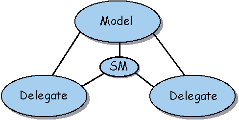
Figure 13: ...or not to share
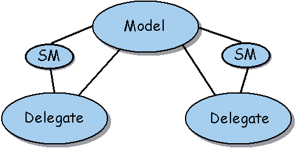
Note the paths of communication in both scenarios. The delegates communicate with the model normally, but, they also communicate with a selection model. The selection model tracks the details of what item they should display as selected. Note the extra communication between the selection model and the model. The selection model is a delegate of the model! This is necessary in case someone removes the selected item from the model or its structure changes. This presents an interesting situation: we can use an object as both a model and a delegate!
Implementing a Selection Model
Our example application would benefit greatly from the addition of a selection model. We will share a selection model between the list delegate and the entry/display delegate.
A selection model needs to track a current selection status. This status can be either a single selection, or multiple selections. This is useful for components such as a list, table, or tree, where you can allow a user to select several items. A very generic selection model would provide a set of selection information, and allow an application to determine how much data a user can select. For our sample application, we implement a simpler selection model that tracks a single selection using a bound property.
Our selection model follows. Note that once again we choose an interface to represent the selection model. This allows us to replace the model (if needed) without requiring changes to a delegate. This model interface defines a single bound property of type AddressDataModel, and the bound-property support methods.
package com.javadude.articles.vaddmvc2;
import com.javadude.articles.vaddmvc1.*;
import java.beans.*;
public interface AddressDataSelectionModel{
public void addPropertyChangeListener(
PropertyChangeListener listener) ;
public AddressBookModel getModel() ;
public AddressDataModel getSelection() ;
public void removePropertyChangeListener(
PropertyChangeListener listener) ;
public void setModel(AddressBookModel model) ;
public void setSelection(AddressDataModel selection) ;
}
We implement this using a very straightforward bean implementation. The only trick is handling changes in the model from which it gets data. Whenever the model changes, we need to check if the selection still exists in the model.
package com.javadude.articles.vaddmvc2;
import com.javadude.articles.vaddmvc1.*;
import java.beans.*;
/**
* A simple selection model that tracks
* and address in a phone book
*/
public class AddressDataSelectionModel
implements PropertyChangeListener {
protected transient PropertyChangeSupport propertyChange;
private AddressDataModel fieldSelection;
private AddressBookModel fieldModel;
// standard bound property support omitted for brevity
// model property keeps track of the model that contains the
// selection
public AddressBookModel getModel() {
return fieldModel;
}
public void setModel(AddressBookModel model) {
// if we had a model before, remove us as a listener
if (fieldModel != null)
fieldModel.removePropertyChangeListener(this);
AddressBookModel oldValue = fieldModel;
fieldModel = model;
// add us as a listener so we can make sure the selection
// still exists in the model
fieldModel.addPropertyChangeListener(this);
firePropertyChange("model", oldValue, model);
}
// selection property tracks which address is currently
// selected
public AddressDataModel getSelection() {
return fieldSelection;
}
public void setSelection(AddressDataModel selection) {
AddressDataModel oldValue = fieldSelection;
fieldSelection = selection;
firePropertyChange("selection", oldValue, selection);
}
/** listen for changes in the model where the selection
* comes from. If we find out that the selection is
* no longer in the model, we kill it...
*/
public void propertyChange(PropertyChangeEvent evt) {
// if the model's list of addresses changes,
// check to be sure that the selection is still
// there
if (evt.getPropertyName().equals("addresses")) {
AddressDataModel[] data = getModel().getAddresses();
for (int i = 0; i < data.length; i++)
if (getSelection().getName().equals(data[i].getName()))
return;
// if not found, clear the selection
AddressDataModel sel = getSelection();
sel.setAddress("");
sel.setBusinessPhone("");
sel.setCity("");
sel.setCountry("");
sel.setHomePhone("");
sel.setName("");
sel.setPostalCode("");
sel.setState("");
}
}
}
Once we have defined the interface for the selection model, we can update our delegates to interact with the selection. Figure 14 shows the patterned list delegate, updated with a selection model.
Figure 14: Using Selection in the List Delegate
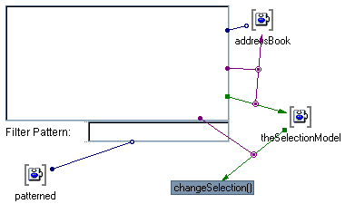
This new delegate provides two-way communication with the selection. When the user selects an item in the List, it fires an itemStateChanged event. We use this event to set the selection in the selection model variable. The value for the selection comes from the model's find() method, which is passed the selectedItem property of the List.
The other direction is a bit simpler. When the selection property in the selection model changes, we call the changeSelection() method via an event-to-code connection. We pass the AddressDataModel from the selection property as the first parameter by checking the Pass event data option for the connection. We then pass a reference to the List so we can update it. The code for changeSelection, shown below, walks the items in the list to see which item number matches the selection's name, then selects the item.
public void changeSelection(AddressDataModel data, List list) {
// find which item matches the selection
for(int i=0; i<list.getItemCount(); i++)
if (list.getItem(i).equals(data.getName())) {
list.select(i);
return; // we are done!
}
}
Finally, we promote the this property of the selection model variable so we can set it from the outside. We now have a list delegate that can set its selection data. If other delegates use the same selection model instance, the selection model notifies them of the change and can update their appearance.
Figure 15 shows the changes we make to the entry/display delegate. We build on the AddressBookUI from the previous article. We make a copy of it and change the way it accesses the selection information.
Figure 15: Using Selection in the Entry/Display Delegate
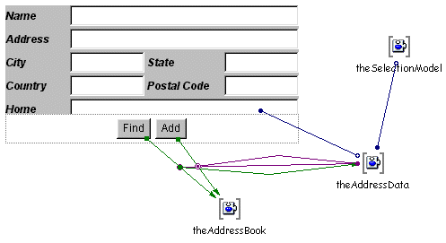
We add a selection model, and link its selection property to the address data variable. This updates the selection whenever we find an entry, and updates the address data whenever the selection changes from outside. By promoting the selection model variable, we allow the data to be set from the outside.
One key issue here is that we must have an initial piece of data. We set this initial data in the selection model outside the delegate, passing it to the selection model as the initial selection
We assemble the application as shown in Figure 16. This new application passes an instance of the selection model to each delegate. Whenever we select an item from the list, the result appears in the entry/display delegate. Whenever we find an entry in the entry/display delegate, the name appears selected in the list delegate.
Figure 16: The New Application Assembly
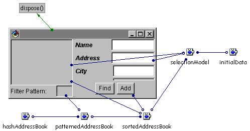
Our final application has combined several of the elements we have used in this article. At the heart of the application is a HashAddressBook containing the real data. We filter the data through a PatternedAddressBook so we can limit the accessed entries via a pattern. We pass the results through a SortedAddressBook for a more natural display.
We add an AddressDataSelectionModel into the picture, linking it to both delegates so they share the selection. Because the selection model should watch the real data, we connect it to the SortedAddressBook model. Finally, to give us an initial AddressDataModel we use a SimpleAddressData instance called initialData set to the selectionModel's selection property. The results of a sample execution appear in Figure 17.
Figure 17: Running our Final Application
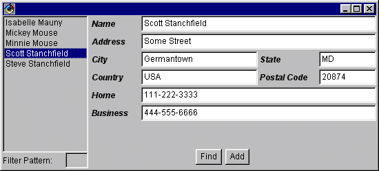
Food for Thought
We could keep expounding the benefits of the Model-View-Controller paradigm, but space and time simply do not permit. We leave you with the following ideas to pursue, keeping in mind the key ingredients in any good Model-View-Controller design: abstraction and indirection.
Documentation
While thoughts of documenting your use of Model-View-Controller may send shudders down your spine, it is very necessary. First, do not be afraid to state in your comments that you are applying MVC (though you should spell it out "Model-View-Controller" when possible). Placing statements at the top of each class can help your maintenance programmer know what to look for.
Second, provide some design documents that list the model and listener interfaces you use and which delegates listen to which models. This can actually be a very simple and short document, but will be one of the most useful ones available to maintenance programmers.
Third, point to resources, such as this article and the previous MVC article, that explain the MVC usage in your code. Some maintenance programmers may not agree with a design pattern, and providing sources of explanation may help them see the benefits.
Finally, document the intended use of your interfaces and stress that later delegates should only talk to the model interfaces. Sometimes a class diagram, using a tool such as Rational Rose, can help the explanation, but at least provide a description of the interactions and why you chose the design.
Advanced Delegates
You can expand delegates in the same manner as we did for models, though it is not as common. One possible scenario that is quite easy to implement is a remote view of a model. The delegate that speaks to the model acts as a proxy for a real delegate on another machine. The proxy obtains data from the model and forwards it across a network to another delegate that reads that data and displays it for the remote user.
Such a proxy can make remote technical support significantly easier. The application normally attaches a local delegate to the model for the user interaction. The user can turn on a special "technical support" option, which simply adds another delegate to the model. This new delegate proxies the display to a technical support representative at your site. This type of delegate proxy can provide a significant benefit during a technical support call, as the support personnel can see and possibly modify the behavior of the application as it runs.
Debugging is another use of extra delegates. You can attach a debugging delegate to your model to dump the model contents and report the event notification. If your model provides additional methods to expose its details, such a debugger could present an ideal view of those inner workings. One of the key advantages that the Model-View-Controller paradigm brings is that the debugger does not affect the other delegates, and the isolation from the model helps ensure that the behavior while debugging does not differ from the behavior during normal execution.
Of course, if you combine these ideas, your technical support personnel can remotely debug the user's application.
Model-View-Controller Wrapup
We have spent a great deal of time discussing the Model-View-Controller paradigm. The nature of VisualAge for Java, and its support for beans and visual composition, makes it an ideal tool to implement this paradigm. Likewise, the Model-View-Controller paradigm is ideal for VisualAge for Java, as it greatly simplifies visual design and maintenance of your programs.
If Model-View-Controller is new to you, take some time to carefully read the examples we have presented, as well try some simple examples of your own. The pattern may seem complex at first, but once you become accustomed to it, you can easily apply it and recognize it in other applications. Your maintenance programmers will thank you for a more flexible design.
Downloads
Copyright © 1996-2009, Scott Stanchfield. All Rights Reserved.
Contact me at scott@javadude.com
JavaDude.com Home
Rounded-corner figures based on "More Snazzy Borders" by
Stu Nicholls
 Want
to hear about new stuff at JavaDude.com? Use this RSS Feed!
Want
to hear about new stuff at JavaDude.com? Use this RSS Feed!